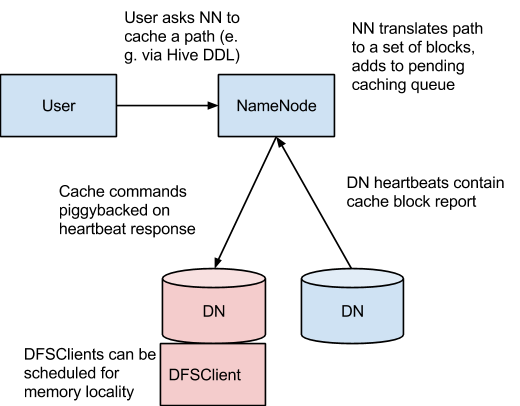

Centralized cache management in HDFS is an explicit caching mechanism that allows users to specify paths to be cached by HDFS. The NameNode will communicate with DataNodes that have the desired blocks on disk, and instruct them to cache the blocks in off-heap caches.
Centralized cache management in HDFS has many significant advantages.
Explicit pinning prevents frequently used data from being evicted from memory. This is particularly important when the size of the working set exceeds the size of main memory, which is common for many HDFS workloads.
Because DataNode caches are managed by the NameNode, applications can query the set of cached block locations when making task placement decisions. Co-locating a task with a cached block replica improves read performance.
When block has been cached by a DataNode, clients can use a new , more-efficient, zero-copy read API. Since checksum verification of cached data is done once by the DataNode, clients can incur essentially zero overhead when using this new API.
Centralized caching can improve overall cluster memory utilization. When relying on the OS buffer cache at each DataNode, repeated reads of a block will result in all n replicas of the block being pulled into buffer cache. With centralized cache management, a user can explicitly pin only m of the n replicas, saving n-m memory.
HDFS supports non-volatile storage class memory (SCM, also known as persistent memory) cache in Linux platform. User can enable either DRAM cache or SCM cache for a DataNode. DRAM cache and SCM cache can coexist among DataNodes. In addition, cache persistence is supported by SCM cache. The status of cache persisted in SCM will be recovered during the start of DataNode if dfs.datanode.pmem.cache.recovery is set to true. Otherwise, previously persisted cache will be dropped and data need to be re-cached.
Centralized cache management is useful for files that accessed repeatedly. For example, a small fact table in Hive which is often used for joins is a good candidate for caching. On the other hand, caching the input of a one year reporting query is probably less useful, since the historical data might only be read once.
Centralized cache management is also useful for mixed workloads with performance SLAs. Caching the working set of a high-priority workload insures that it does not contend for disk I/O with a low-priority workload.

In this architecture, the NameNode is responsible for coordinating all the DataNode off-heap caches in the cluster. The NameNode periodically receives a cache report from each DataNode which describes all the blocks cached on a given DN. The NameNode manages DataNode caches by piggybacking cache and uncache commands on the DataNode heartbeat.
The NameNode queries its set of cache directives to determine which paths should be cached. Cache directives are persistently stored in the fsimage and edit log, and can be added, removed, and modified via Java and command-line APIs. The NameNode also stores a set of cache pools, which are administrative entities used to group cache directives together for resource management and enforcing permissions.
The NameNode periodically rescans the namespace and active cache directives to determine which blocks need to be cached or uncached and assign caching work to DataNodes. Rescans can also be triggered by user actions like adding or removing a cache directive or removing a cache pool.
We do not currently cache blocks which are under construction, corrupt, or otherwise incomplete. If a cache directive covers a symlink, the symlink target is not cached.
Caching is currently done on the file or directory-level. Block and sub-block caching is an item of future work.
A cache directive defines a path that should be cached. Paths can be either directories or files. Directories are cached non-recursively, meaning only files in the first-level listing of the directory.
Directives also specify additional parameters, such as the cache replication factor and expiration time. The replication factor specifies the number of block replicas to cache. If multiple cache directives refer to the same file, the maximum cache replication factor is applied.
The expiration time is specified on the command line as a time-to-live (TTL), a relative expiration time in the future. After a cache directive expires, it is no longer considered by the NameNode when making caching decisions.
A cache pool is an administrative entity used to manage groups of cache directives. Cache pools have UNIX-like permissions, which restrict which users and groups have access to the pool. Write permissions allow users to add and remove cache directives to the pool. Read permissions allow users to list the cache directives in a pool, as well as additional metadata. Execute permissions are unused.
Cache pools are also used for resource management. Pools can enforce a maximum limit, which restricts the number of bytes that can be cached in aggregate by directives in the pool. Normally, the sum of the pool limits will approximately equal the amount of aggregate memory reserved for HDFS caching on the cluster. Cache pools also track a number of statistics to help cluster users determine what is and should be cached.
Pools also can enforce a maximum time-to-live. This restricts the maximum expiration time of directives being added to the pool.
cacheadmin command-line interfaceOn the command-line, administrators and users can interact with cache pools and directives via the hdfs cacheadmin subcommand.
Cache directives are identified by a unique, non-repeating 64-bit integer ID. IDs will not be reused even if a cache directive is later removed.
Cache pools are identified by a unique string name.
Usage: hdfs cacheadmin -addDirective -path <path> -pool <pool-name> [-force] [-replication <replication>] [-ttl <time-to-live>]
Add a new cache directive.
| <path> | A path to cache. The path can be a directory or a file. |
| <pool-name> | The pool to which the directive will be added. You must have write permission on the cache pool in order to add new directives. |
| -force | Skips checking of cache pool resource limits. |
| <replication> | The cache replication factor to use. Defaults to 1. |
| <time-to-live> | How long the directive is valid. Can be specified in minutes, hours, and days, e.g. 30m, 4h, 2d. Valid units are [smhd]. “never” indicates a directive that never expires. If unspecified, the directive never expires. |
Usage: hdfs cacheadmin -removeDirective <id>
Remove a cache directive.
| <id> | The id of the cache directive to remove. You must have write permission on the pool of the directive in order to remove it. To see a list of cachedirective IDs, use the -listDirectives command. |
Usage: hdfs cacheadmin -removeDirectives <path>
Remove every cache directive with the specified path.
| <path> | The path of the cache directives to remove. You must have write permission on the pool of the directive in order to remove it. To see a list of cache directives, use the -listDirectives command. |
Usage: hdfs cacheadmin -listDirectives [-stats] [-path <path>] [-pool <pool>]
List cache directives.
| <path> | List only cache directives with this path. Note that if there is a cache directive for path in a cache pool that we don’t have read access for, it will not be listed. |
| <pool> | List only path cache directives in that pool. |
| -stats | List path-based cache directive statistics. |
Usage: hdfs cacheadmin -addPool <name> [-owner <owner>] [-group <group>] [-mode <mode>] [-limit <limit>] [-maxTtl <maxTtl>]
Add a new cache pool.
| <name> | Name of the new pool. |
| <owner> | Username of the owner of the pool. Defaults to the current user. |
| <group> | Group of the pool. Defaults to the primary group name of the current user. |
| <mode> | UNIX-style permissions for the pool. Permissions are specified in octal, e.g. 0755. By default, this is set to 0755. |
| <limit> | The maximum number of bytes that can be cached by directives in this pool, in aggregate. By default, no limit is set. |
| <maxTtl> | The maximum allowed time-to-live for directives being added to the pool. This can be specified in seconds, minutes, hours, and days, e.g. 120s, 30m, 4h, 2d. Valid units are [smhd]. By default, no maximum is set. A value of "never " specifies that there is no limit. |
Usage: hdfs cacheadmin -modifyPool <name> [-owner <owner>] [-group <group>] [-mode <mode>] [-limit <limit>] [-maxTtl <maxTtl>]
Modifies the metadata of an existing cache pool.
| <name> | Name of the pool to modify. |
| <owner> | Username of the owner of the pool. |
| <group> | Groupname of the group of the pool. |
| <mode> | Unix-style permissions of the pool in octal. |
| <limit> | Maximum number of bytes that can be cached by this pool. |
| <maxTtl> | The maximum allowed time-to-live for directives being added to the pool. |
Usage: hdfs cacheadmin -removePool <name>
Remove a cache pool. This also uncaches paths associated with the pool.
| <name> | Name of the cache pool to remove. |
Usage: hdfs cacheadmin -listPools [-stats] [<name>]
Display information about one or more cache pools, e.g. name, owner, group, permissions, etc.
| -stats | Display additional cache pool statistics. |
| <name> | If specified, list only the named cache pool. |
Usage: hdfs cacheadmin -help <command-name>
Get detailed help about a command.
| <command-name> | The command for which to get detailed help. If no command is specified, print detailed help for all commands. |
In order to lock block files into memory, the DataNode relies on native JNI code found in libhadoop.so or hadoop.dll on Windows. Be sure to enable JNI if you are using HDFS centralized cache management.
Currently, there are two implementations for persistent memory cache. The default one is pure Java based implementation and the other is native implementation which leverages PMDK library to improve the performance of cache write and cache read.
To enable PMDK based implementation, please follow the below steps.
Install PMDK library. Please refer to the official site http://pmem.io/ for detailed information.
Build Hadoop with PMDK support. Please refer to “PMDK library build options” section in BUILDING.txt in the source code.
To verify that PMDK is correctly detected by Hadoop, run the hadoop checknative command.
Be sure to configure one of the following properties for DRAM cache or persistent memory cache. Please note that DRAM cache and persistent cache cannot coexist on a DataNode.
dfs.datanode.max.locked.memory
This determines the maximum amount of memory a DataNode will use for caching. On Unix-like systems, the “locked-in-memory size” ulimit (ulimit -l) of the DataNode user also needs to be increased to match this parameter (see below section on OS Limits). When setting this value, please remember that you will need space in memory for other things as well, such as the DataNode and application JVM heaps and the operating system page cache.
This setting is shared with the Lazy Persist Writes feature. The Data Node will ensure that the combined memory used by Lazy Persist Writes and Centralized Cache Management does not exceed the amount configured in dfs.datanode.max.locked.memory.
dfs.datanode.pmem.cache.dirs
This property specifies the cache volume of persistent memory. For multiple volumes, they should be separated by “,”, e.g. “/mnt/pmem0, /mnt/pmem1”. The default value is empty. If this property is configured, the volume capacity will be detected. And there is no need to configure dfs.datanode.max.locked.memory.
The following properties are not required, but may be specified for tuning:
dfs.namenode.path.based.cache.refresh.interval.ms
The NameNode will use this as the amount of milliseconds between subsequent path cache rescans. This calculates the blocks to cache and each DataNode containing a replica of the block that should cache it.
By default, this parameter is set to 30000, which is thirty seconds.
dfs.datanode.fsdatasetcache.max.threads.per.volume
The DataNode will use this as the maximum number of threads per volume to use for caching new data.
By default, this parameter is set to 4.
dfs.cachereport.intervalMsec
The DataNode will use this as the amount of milliseconds between sending a full report of its cache state to the NameNode.
By default, this parameter is set to 10000, which is 10 seconds.
dfs.namenode.path.based.cache.block.map.allocation.percent
The percentage of the Java heap which we will allocate to the cached blocks map. The cached blocks map is a hash map which uses chained hashing. Smaller maps may be accessed more slowly if the number of cached blocks is large; larger maps will consume more memory. The default is 0.25 percent.
dfs.namenode.caching.enabled
This parameter can be used to enable/disable the centralized caching in NameNode. When centralized caching is disabled, NameNode will not process cache reports or store information about block cache locations on the cluster. Note that NameNode will continute to store the path based cache locations in the file-system metadata, even though it will not act on this information until the caching is enabled. The default value for this parameter is true (i.e. centralized caching is enabled). In the current implementation, centralized caching introduces additional write lock overhead (see CacheReplicationMonitor#rescan) even if no path to cache is specified, so we recommend disabling this feature when not in use. We will disable centralized caching by default in later versions.
dfs.datanode.pmem.cache.recovery
This parameter is used to determine whether to recover the status for previous cache on persistent memory during the start of DataNode. If it is enabled, DataNode will recover the status for previously cached data on persistent memory. Thus, re-caching is avoided. If this property is not enabled, DataNode will drop cache, if any, on persistent memory. This property can only work when persistent memory cache is enabled, i.e., dfs.datanode.pmem.cache.dirs is configured.
If you get the error “Cannot start datanode because the configured max locked memory size… is more than the datanode’s available RLIMIT_MEMLOCK ulimit,” that means that the operating system is imposing a lower limit on the amount of memory that you can lock than what you have configured. To fix this, you must adjust the ulimit -l value that the DataNode runs with. Usually, this value is configured in /etc/security/limits.conf. However, it will vary depending on what operating system and distribution you are using.
You will know that you have correctly configured this value when you can run ulimit -l from the shell and get back either a higher value than what you have configured with dfs.datanode.max.locked.memory, or the string “unlimited,” indicating that there is no limit. Note that it’s typical for ulimit -l to output the memory lock limit in KB, but dfs.datanode.max.locked.memory must be specified in bytes.
This information does not apply to deployments on Windows. Windows has no direct equivalent of ulimit -l.